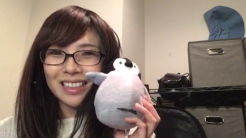
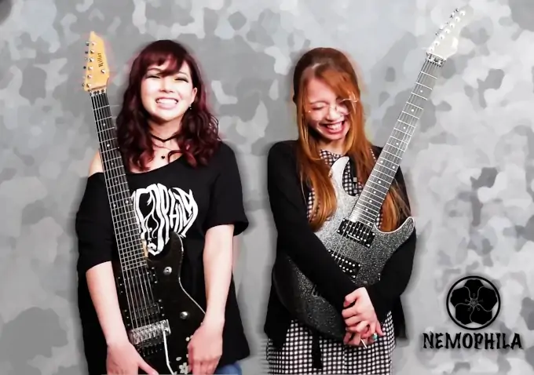

回顧 / a look back
-
渋谷CYCLONEで、SAKI’s Birthday Live
post明日はサイクロンでバースデーライヴか。当日から半月以上も後だもんでね、気にせずゆりると楽しんでちょーだいな
-
新宿Wild SideTokyoにて、Nemophila
初の1時間ライブ
post -
Mary’s Blood サポーターズクラブ限定ライブ「ハロウィンナイト〜ごうおん!〜」
post -
新宿PIT INNで、西山瞳とNHORHMライブ
post -
渋谷REXで、RIO’s Birthday Live
post -
佐野はな20周年ワンマン
いくつかのゲスト演奏の第一
post -
Classic Rock Jam 2019 25th Anniversary Special
聖飢魔ⅡとSHOW-YAなどのメンバーと
post今日死んでも大丈夫です、冗談抜きで
-
MARI Birthday Live
post -
横浜Hey Joeで、Poundin’ Jam
實成峻さんやhibikiさんや是方博邦さん。XENON石川さんは観に行った。
post -
Mary’s Blood 「クリぼっちSP 〜サイレンナイッ☆ホーリーナイッ〜」
post -
Mary’s Blood 「新春！あこーすてぃっく大会！！」
post -
下北沢GARDENでKATAMALI新春音遊会に出演
post -
渋谷REXで、EYE’s Birthday Live
NoBさんの意外な出演
post -
『The Trooper』MVでネモフィラチャンネルのデビュー
post -
「Mary's Blood 10th Anniversary Box」発売記念イベント
post -
Nemophila、Rock Rocker Rockestラジオ番組にゲストとして出演
post -
Ironbunny最初のワンマンライブ
SAKIさんの意外な出演
post -
「Hours」MVを撮るようにLeclercqさん東京を訪れる
post -
Nemophila 1st ワンマンライブ@渋谷REX、OIRAN EPリリース
みったんさんゲストドラム
post -
BURRN!雑誌の読者人気投票
GUITARISTとSHINING STARでトップ１０位に入った
post -
「musicるTV」#408テレビ放送
Ironbunnyワンマンライブのビデオクリップとインタビュー
post -

始まりのツイキャス配信
多くの配信は続く。ちゃっきーさんと新曲を作る！
post -
YouTubeで【NEMOPHILA】地獄のゆるふわ生配信
post -
開始のNEMOPHILAの「水ネモ」ツイキャス配信
post -
YouTubeでSHOW-YAの「Rock Love」を3バンドコラボMV
NemophilaとSHOW-YAとMary's Blood関与
post -
プリンセスプリンセスの「Diamonds」のNemophilaのカバーMV
富田京子さんゲストドラム
post -
プリンセスプリンセスの「Get Crazy」のNemophilaのカバーMV
富田京子さんゲストドラム
post -
NemophilaツイキャスPREMIUM配信ライブ
post -
下北沢gardenで、Mary's Blood 『無観客スーパーライブ』 配信
post -
吉祥寺Silver Elephantで、ROCK INST NIGHTツイキャス生配信
實成峻さん、古谷圭介さん、YASHIROさんと一緒に
post -
YouTubeでNemophila、Rage Against the Machineの「Guerilla Radio」カバーMV
post -

Nemophila YOUNG GUITAR誌と連動し『 OIRAN弾いてみた！』大会始動
post -
YouTubeで、歌謡ポップス『スカパー! GUEST LIVE』生配信
寺田恵子さんと富田京子さんとやついいちろうさんと一緒に
post -
YouTubeで、Mary’s Blood「ペガサス幻想」MV
NoBさんさんのゲストボーカル
post -
YouTubeで、【NEMOPHILA】地獄のゆるふわ生配信 #２
post -
Mary’s Bloodの最初の舞台裏動画
SAKIさんに編集されて撮られた最初の動画
post -
「むらたたむ復帰！NEMOPHILA 1st Streaming Live」や雷霆 -RAITEI-EPとMVリリース
感情的なアンコール！
post -
歌謡ポップスチャンネルで、『NEMOPHILA～地獄のゆるふわ初冠～』放送
post -
YouTubeで、Mary’s Blood 「Re>Animator」のリリース記念生配信
post -
Mary’s Bloodの『Re>Animator』リミスタオンラインサイン会とアルバムリリース
post -
Mary’s Bloodの『Re>Animator』キャラアニサイン会
post -
Mary’s Blood ポップアップストア
9/1〜14まで、新宿マルイアネックスで
post -
Mary’s Blood 「Conceptual Tour」生配信ライブ DAY.1 Couronne de Azure ～Osaka Edition～
post -
Mary’s Blood 「Conceptual Tour」生配信ライブ DAY.2 Dressed in Scarlet ～Nagoya Edition～
post -
『NEMOPHILA～地獄のゆるふわ初冠～#2』放送
post -
YouTubeで、Shred Racers 『richromatic』動画と曲リリース
EdieeさんとLi-sa-Xさんと一緒に
post -
Mary’s Blood、タワーレコードインストア配信ミニライヴ
post -
YouTubeで、NemophilaSHOW-YAの『私は嵐』のカバーMV
みったんさんゲストドラム
post -
Shred Racers、『紅蓮華』カバーMV
Edieeさん、Fukiさん、Kotonoさん、和樹さん、HAYATOさんと一緒に
post -
『Mary’s Blood Conceptual Tour』 DAY.1 Couronne de Azure ～東京 Edition～
川崎CLUB CITTA'で、ライブ会場と生配信生配信
post -
『Mary’s Blood Conceptual Tour』 DAY.2 Dressed in Scarlet ～東京 Edition～
川崎CLUB CITTA'で、ライブ会場と生配信生配信
post -
AMAHIRUの『Hours』MVとシングルデビュー
post -
Nemophila SHOW-YAの『Fairy』カバーMV
みったんさんゲストドラム
post -
Shred Racers F2 生配信
Ironbunny、Li-sa-Xさん、Fukiさんと一緒に
post